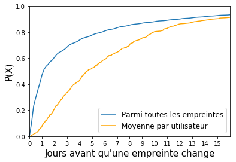
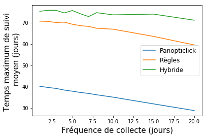
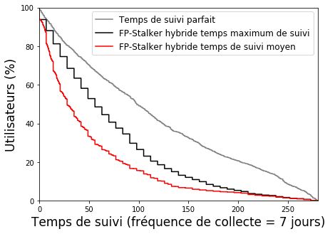
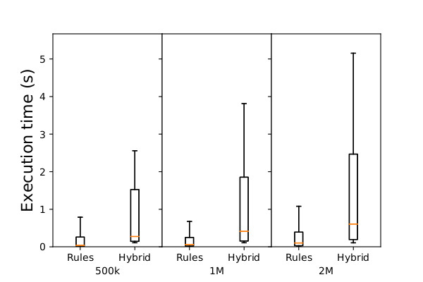
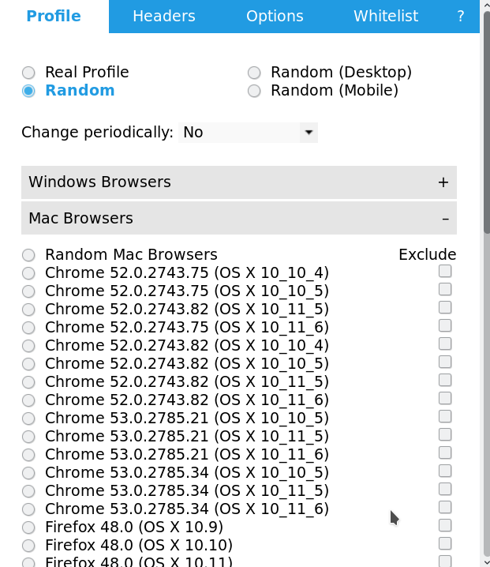

Empreintes de navigateurs: Vie privée et sécurité
Antoine Vastel - Université de Lille/INRIA
Qui suis-je ?
- Doctorant en 2eme année
- Équipe Spirals Inria / Université de Lille
- Empreintes de navigateurs (browser fingerprint)
Qu'est-ce que le browser fingerprinting ?
Le browser fingerprinting
Technique de suivi d'utilisateurs sans fichier/cookie
Présenté par Eckerlsey en 2010
Se base sur la diversité des:
- OS
- Navigateurs
- Appareils
Exemple d'une empreinte de navigateur
| Attribut | Valeur |
|---|---|
| User agent | Mozilla/5.0 (X11; Linux x86_64) AppleWebKit/537.36 (KHTML, like Gecko) Chrome/59.0.3071.86 Safari/537.36 |
| Langues | fr-FR,fr;q=0.8,en-US;q=0.6,en;q=0.4 |
| Accept | text/html,application/xhtml+xml,application/xml; q=0.9,image/webp,image/apng,*/*;q=0.8 |
| Encodage | gzip, deflate, br |
| Plugins | Plugin 0: Chrome PDF Viewer; ; mhjfbmdgcfjbbpaeojofohoefgiehjai. Plugin 1: Chrome PDF Viewer; Portable Document Format; internal-pdf-viewer. Plugin 2: Native Client; ; internal-nacl-plugin. |
| Fuseau horaire | -120 |
| Résolution d'écran | 1280x720 |
| Polices d'écriture | Liste des polices d'écriture |
| Canvas |
Etat de l'art : vie privée
Unicité:- 83.6% d'empreintes uniques (Eckersley 2010)
- 81% sur mobile (Laperdrix 2016)
- 5% top 1k Alexa (Englehardt 2016)
Etat de l'art : Sécurité
Amélioration de la sécurité:
- Utilisé comme second facteur d'authentification (Alaca 2016)
- Évite les vols de sessions (Unger 2013)
- Détection de classes d'appareils (Bursztein 2016)
Problématiques
- Peut-on suivre les utilisateurs avec leurs empreintes de navigateurs ?
- Les contre-mesures sont-elles efficaces ?
- Peut-on détecter les bots grâce à leurs empreintes ?
Mes recherches
- FP-Stalker : Vie privée
- FP-Scanner : Vie privée
- FP-Bot : Sécurité
FP-Stalker
- À quel point les empreintes de navigateurs restent stables dans le temps ?
- Combien de temps peut-on suivre un navigateur grâce à son empreinte ?
Amiunique.org
- Site de collecte d'empreintes de navigateurs
- 500k+ empreintes
- Extensions pour navigateurs
Stabilité des empreintes de navigateurs (1/2)
| Médiane | 90% | 95% | |
|---|---|---|---|
| Résolution d'écran | Jamais | 3.1 | 1.8 |
| User agent | 39.7 | 13.0 | 8.4 |
| Liste des polices | Jamais | 11.8 | 5.4 |
| Canvas | 290.0 | 35.3 | 17.2 |
Durées (jours) pendant lesquelles les attributs restent constants pour la médiane, le 90eme et le 95eme centile.
Stabilité des empreintes de navigateurs (2/2)

Fonction de distribution du temps écoulé avant qu'une empreinte évolue pour toutes les empreintes (bleu), et moyenné par utilisateur (orange)
Suivi d'utilisateurs : vue d'ensemble

Algorithme à base de règles
- Même OS
- Même navigateur
- Version du navigateur croissante
- ...
- Similarité user agent, plugins > 75%
Algorithme hybride : Règles + Machine Learning
- Règles objectives pour filtrer
- Machine learning pour affiner
Vectorisation
| Empreinte inconnue | Empreinte connue | Vecteur | |
|---|---|---|---|
| User agent | "Mozilla/5.0 (X11; Linux x86_64; rv:59.0) Gecko/20100101 Firefox/59.0" | "Mozilla/5.0 (X11; Linux x86_64; rv:58.0) Gecko/20100101 Firefox/58.0" | 0.97 |
| Encodage | "gzip, deflate, br" | "gzip, deflate" | 0.87 |
| Langues | "en-US,en;q=0.5" | "fr-FR,fr;q=0.8,en-US;q=0.6,en;q=0.4" | 0.53 |
| ... | ... | ... | ... |
| Canvas | 0 |
Modèle de prédiction
Temps maximum moyen de suivi par empreintes de navigateurs
- Dataset: 95k empreintes, 1905 navigateurs

Détails résultats algorithme hybride
- Fréquence de collecte fixée à 7 jours
- 26% des utilisateurs suivis plus de 100 jours (noir)

Évaluation temps d'exécution
- Scalabilité: 8 processus -> 80% gain de temps
- Règles 5 fois plus rapides

FP-Scanner
- Les contre-mesures pour le fingerprinting sont-elles détectables ?
- Sont-elles contre-productives ?
Différents types de contre-mesures
- Bloqueurs/poisonneurs de Canvas
- Spoofers
- Navigateurs modifiés
Exemple : Random Agent Spoofer

Empreintes incohérentes
Incohérence :
Qui manque d'unité, de cohésion, dont les parties ne sont pas en accord.
- User Agent dit Linux
- Plateforme dit Windows
- Plugins avec extension .dll
Détection des contre-mesures
- Plateforme, carte graphique, plugins (OS)
- Erreurs exécution JS (navigateur)
- Capteurs : accéléromètre, tactile (appareil)
- Pixels manipulés (Canvas)
- Fonctions/getters réécrits (Autre)
Résultats
- Précision > 0.99 (FP-Scanner)
- Précision = 0.45 (FingerprintJS2/Augur)
- Capable de retrouver valeur originale
Discussion vie privée
Détection n'est pas suffisante :
- Identification de la contre-mesure
- Influence du nombre utilisateurs
- Possibilité de retrouver les valeurs originales
- Volume de fuite d'information
Fuite d'information : exemple contre-mesure pour les canvas
- Censé protéger contre le canvas fingerprinting
- Modifie la valeur des canvas
Comment ça marche ?
- Génère 4 nombres au hasard (bruit)
- Composantes r, g, b, a d'une image
- Applique le bruit sur le canvas
Fuite d'information
- Détection de la contre-mesure
- Extraction du bruit (MutationObserver)
- Récupération canvas original (cloner toDataURL avant exécution extension)
Attention :
- Utilisateurs plus faciles à cibler (1)
- Utilisation du bruit comme identifiant (2)
- Contre-mesure inefficace (3)
FP-Bot
- Objectif : Améliorer la détection de bots grâce au fingerprinting
Pourquoi détecter les bots ?
- Utilisateurs non humains
- Génèrent de la charge sur les serveurs
- Faussent les statistiques
- Volent du contenu
Détection de bots : approches actuelles
- Analyse des logs serveurs
- Événements clavier/souris
- Honeypots (liens cachés)
- CAPTCHAs
Empreintes des bots
- Attributs rajoutés par les frameworks de crawling (window.webriver, window.phantom)
- Détection d'incohérences :
- Ne pas mentir et être détecté
- Mentir et risquer d'être détecté
Exemple Chrome Headless
User agent :
Mozilla/5.0 (X11; Linux x86_64) AppleWebKit/537.36 (KHTML, like Gecko) HeadlessChrome/60.0.3112.50 Safari/537.36
Incohérences/Différences :
Objet window.chrome
Gestion des permissions incohérentes
Absence de plugins habituellement présents dans Chrome
Enjeux, limites
- Exécution côté client (dans le navigateur)
- Reverse engineering
- Fabriquer/modifier requêtes
- Obfuscation, randomization
Conclusion : Vie privée
- Possibilité de suivre l'évolution d'empreintes
- Prise en compte par des grands acteurs du web (Firefox, Brave)
- Diminution de l'unicité des empreintes
- Attention à la conception de contre-mesures
Conclusion : Sécurité
- Second facteur pendant l'authentification
- Détection de bots
- Exécuté côté client
Des questions ?
- FP-Stalker : Suivi des utilisateurs
- FP-Scanner : Efficacité des contre-mesures
- FP-Bot : Détection de bots